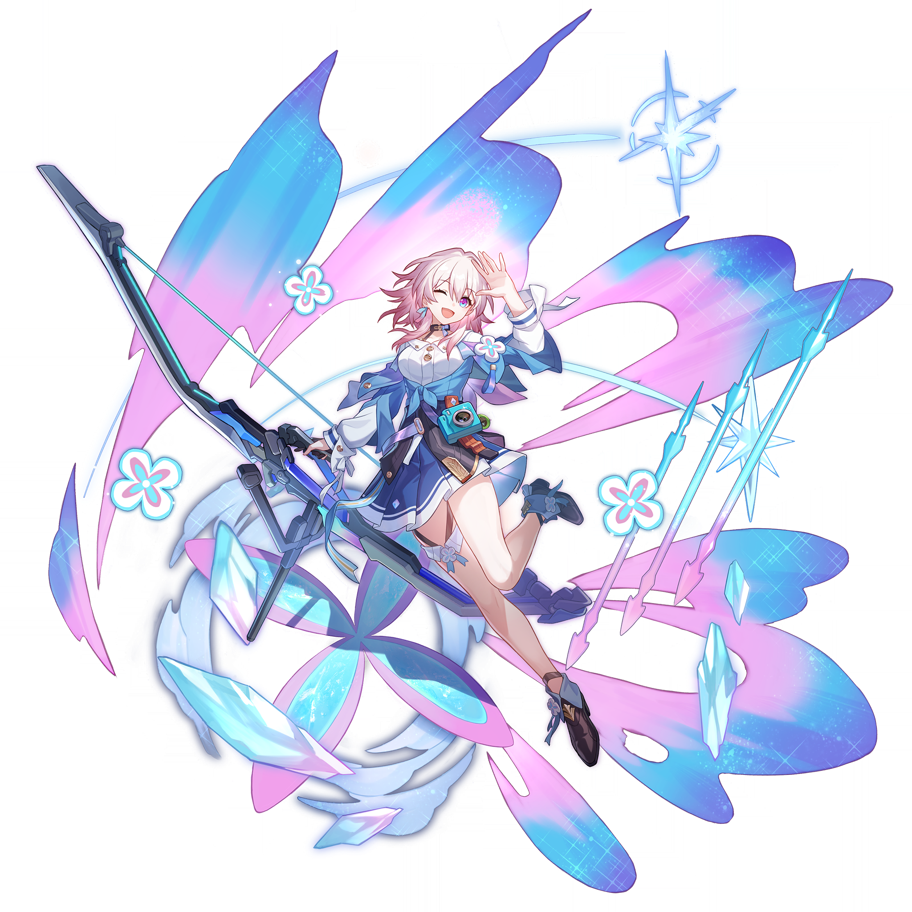
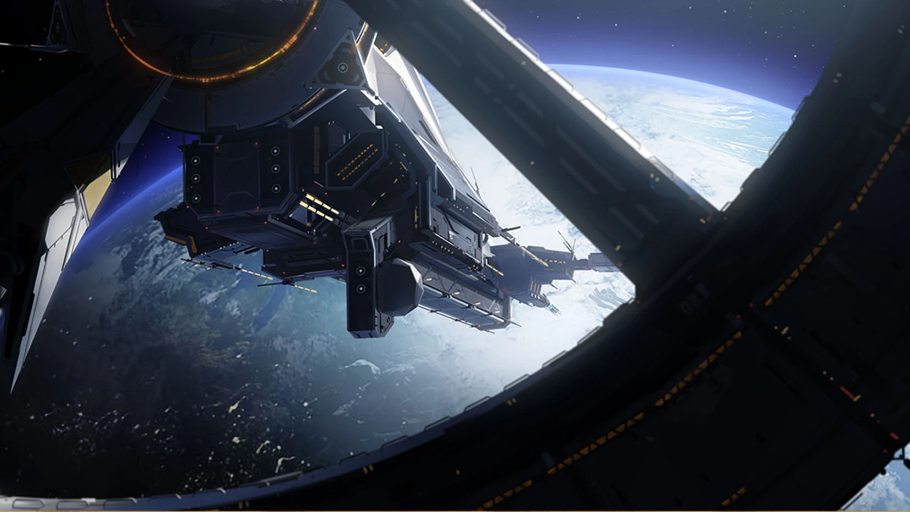
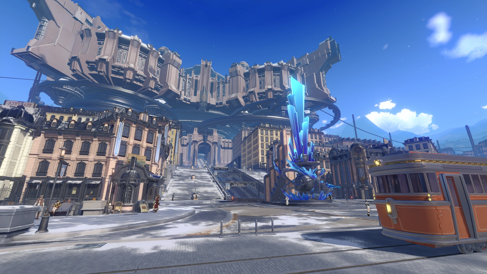
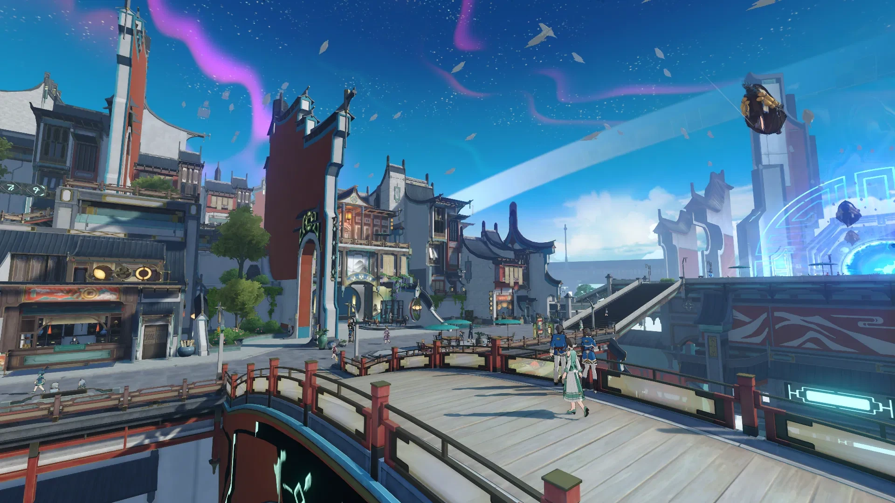
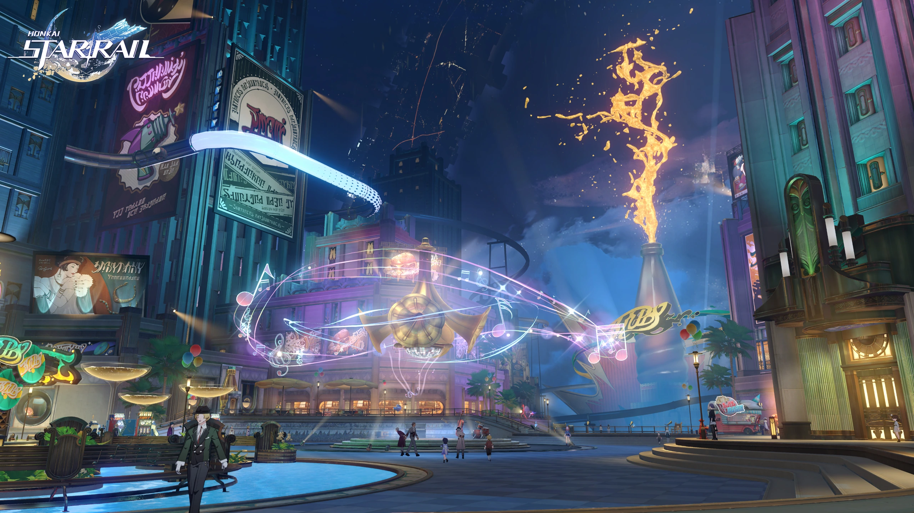
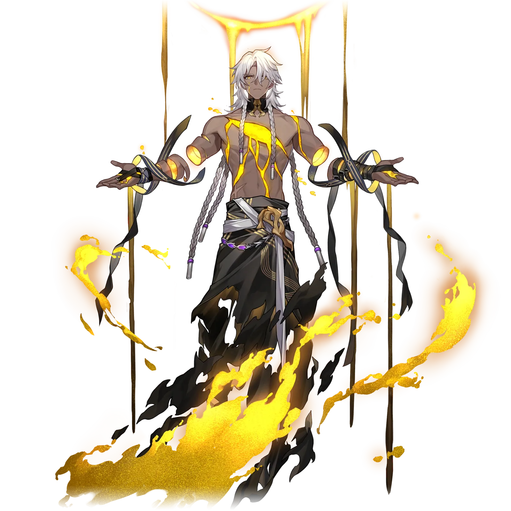
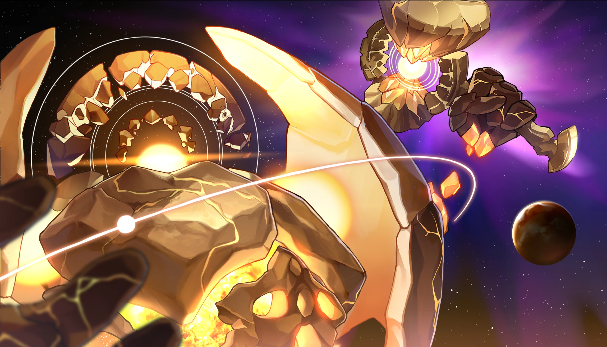
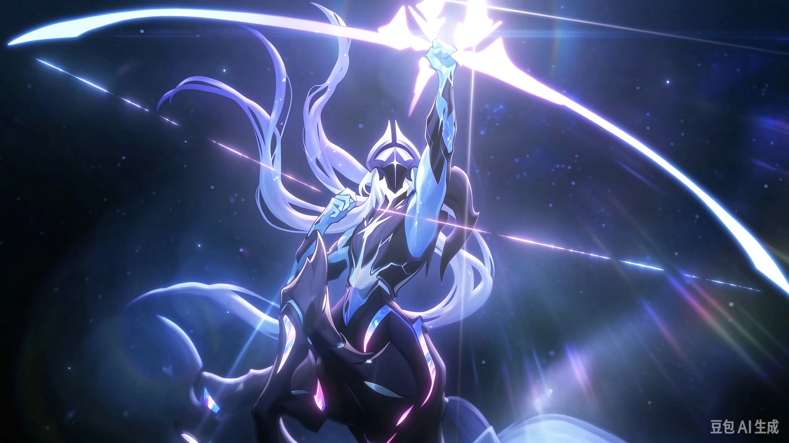
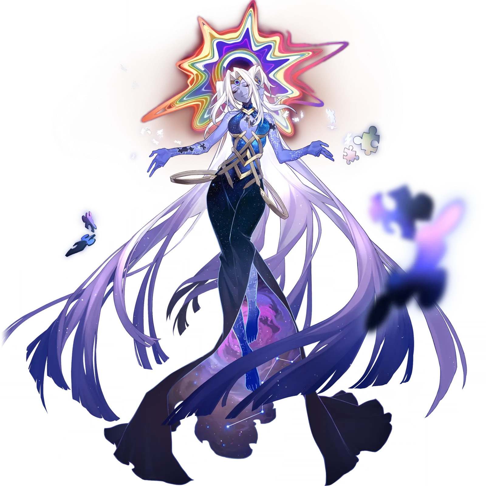

■ 002不同的轨迹，
不同的轨迹，
同一片星海。
■ 同行者档案 / THE COMPANIONS
三月七 MARCH 7TH
从恒冰中苏醒的少女，随星穹列车踏上旅途。用六相冰守护同伴，也用相机珍藏每一次相遇。在寻回过去之前，先把今天拍得闪闪发亮。
三月七MARCH 7TH冰 · 存护
点击切换 · 悬停暂停
06 / 11星轨已连接 / ROUTE CONNECTED04 DESTINATIONS
银河，很大。
下一站见。

01 / 黑塔空间站 ↗
02 / 雅利洛–VI ↗
03 / 仙舟「罗浮」 ↗
04 / 匹诺康尼 ↗一张车票，无数种可能。
循着开拓的轨迹，走进各不相同的世界。

AEON / NANOOK纳努克
星轨 01 / PATH RESONANCE
毁灭
DESTRUCTION
空间站的第一束星光01 / HERTA SPACE STATION好奇心，
HERTA.好奇心，
没有引力。
黑塔空间站
从一座收藏宇宙奇物的空间站，打开未知的第一扇门。
黑塔空间站沿星轨继续 ↓

AEON / QLIPOTH克里珀
星轨 02 / PATH RESONANCE
存护
PRESERVATION
风雪中的存护之志02 / THE FROZEN WORLD风雪尽头，
BELOBOG.风雪尽头，
仍有灯火。
雅利洛–VI
在冰封的世界里，寻找足以融化漫长寒夜的温度。
雅利洛–VI沿星轨继续 ↓

AEON / LAN岚
星轨 03 / PATH RESONANCE
巡猎
HUNT
巡猎的星轨03 / THE XIANZHOU LUOFU浮云之上，
LUOFU.浮云之上，
另有天地。
仙舟「罗浮」
穿过玉界门，听星槎掠过长街，听古老的故事再度启程。
仙舟「罗浮」沿星轨继续 ↓

AEON / XIPE希佩
星轨 04 / PATH RESONANCE

同谐
HARMONY
在美梦中彼此相连04 / THE LAND OF DREAMS今夜，
DREAM ON.今夜，
梦见整个宇宙。
匹诺康尼
霓虹闪烁，钟声未响。请收好这张通往美梦的邀请函。
匹诺康尼把风景留在下一页 ↓
GALACTIC JOURNAL / 三月七的相册相片有限。
点击相片，重返那一站 ↗相片有限。
故事，无限。
按下快门的那一刻，
遥远的银河也成了身边的日常。
愿此行，
终抵群星。
下一段旅途，从你登车的那一刻开始。